Die Viva-Deluxe App
So funktioniert sie – Meine Zeit · Qualität · Verwaltung · Stand 17.10.2026
So funktioniert sie – Meine Zeit · Qualität · Verwaltung · Stand 17.10.2026
Eine App für alle: app.viva-deluxe-reinigung.de/m. Wie man sie auf das Handy legt, steht in der Anleitung „App installieren“. Welche Bereiche jemand sieht, hängt von der Anmeldung ab:
| Bereich | Wofür | Wer sieht ihn |
|---|---|---|
| Meine Zeit | Stempeln, Zeiten bestätigen, Urlaub/Krank melden, Dokumente und Lohnabrechnungen, Stundenliste | Alle Mitarbeitenden. Objektleitung und Büro, wenn ihr Benutzer mit dem eigenen Personaldatensatz verknüpft ist. |
| Qualität | Qualitätskontrolle (Audit) Raum für Raum, Fotos, Tickets | Objektleitung (nur eigene Objekte) und Büro |
| Verwaltung | Team, Zeiten heute, Nachträge und Urlaubsanträge, Objekte, Formulare | Objektleitung (nur eigene Objekte und deren Leute) und Büro |

Eine Maske für alle. Mitarbeitende: oben die Personalnummer, unten die PIN. Objektleitung und Büro: oben der Benutzername, unten das Passwort. Die App erkennt selbst, was eingegeben wurde. „Angemeldet bleiben“ angehakt lassen.

Beim ersten Mal ist die PIN das Geburtsdatum TTMMJJ (12.04.1990 → 120490). Die App verlangt dann sofort eine eigene PIN (4–6 Ziffern, nicht das Geburtsdatum, nicht 1234). Nach 5 falschen Versuchen ist die Anmeldung 15 Minuten gesperrt.
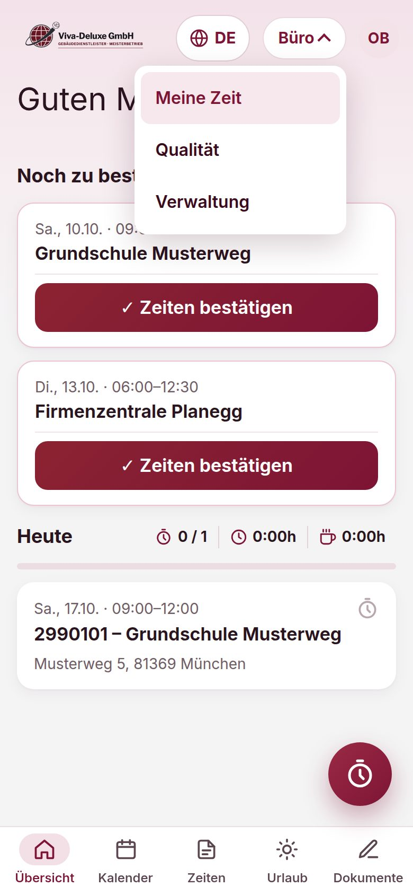
Objektleitung und Büro: oben rechts der Knopf „Büro ▾“ (bzw. „Qualität ▾“, „Verwaltung ▾“) wechselt zwischen Meine Zeit · Qualität · Verwaltung. Mitarbeitende sehen diesen Knopf nicht.

Die Initialen oben rechts öffnen das Profil: App-Tour (kurze Einführung), App-Berechtigungen (Mitteilungen, Kamera, Standort), Sprache, PIN bzw. Passwort ändern, Abmelden. Der Globus wechselt die Sprache (Deutsch, Englisch, Rumänisch, Türkisch, Polnisch, Kroatisch/Bosnisch/Serbisch, Bulgarisch).
Die Leiste unten bleibt immer stehen. In Meine Zeit: Übersicht · Kalender · Zeiten · Urlaub · Dokumente. In Verwaltung: Übersicht · Team · Zeiten · Objekte. In Qualität: Audits · Objekte · Tickets.


1Beim Ankommen auf die Uhr tippen. Das heutige Objekt steht schon da → ▶ Zeiterfassung starten.

2Der Knopf zeigt die laufende Zeit. Die App darf jetzt geschlossen werden, die Zeit läuft auf dem Server weiter.

3Beim Gehen wieder auf die Uhr → ■ Stopp. Hier steht auch die Pause: „Pause ändern“, wenn sie zu einer anderen Zeit war.

Kein Einsatz geplant? Dann fragt die App „Wo arbeitest du?“: zuletzt genutzte Objekte stehen oben, sonst Objekt, Kunde oder Adresse eintippen.

Ab 2 Buchstaben erscheinen die Treffer. Objekt antippen → Zeiterfassung starten.
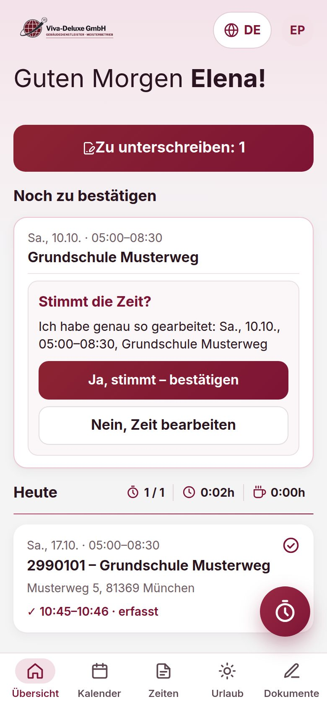
1Beim Einsatz auf „✓ Zeiten bestätigen“ tippen. Es erscheint „Stimmt die Zeit?“ mit Tag, Uhrzeit und Objekt → „Ja, stimmt – bestätigen“, wenn genau so gearbeitet wurde.
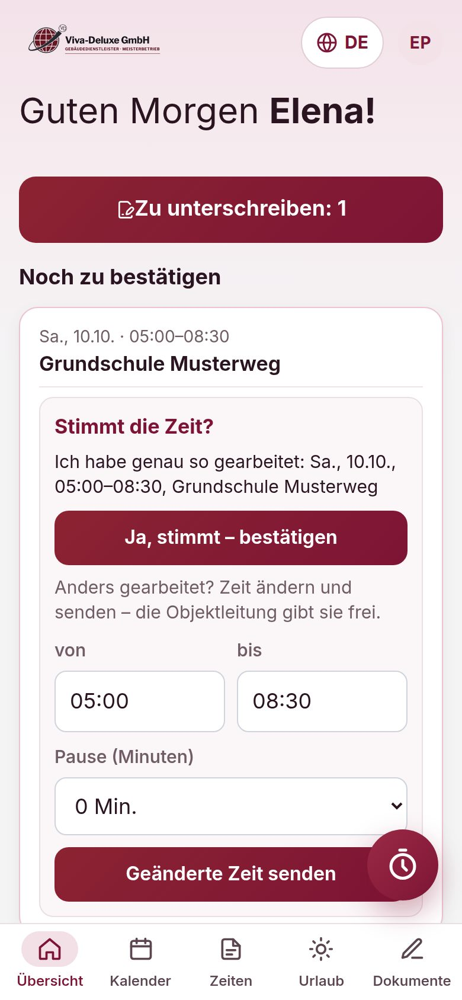
2Anders gearbeitet? „Nein, Zeit bearbeiten“: Beginn, Ende und Pause eintragen → Geänderte Zeit senden. Das ist ein Nachtrag, den die Objektleitung freigibt.
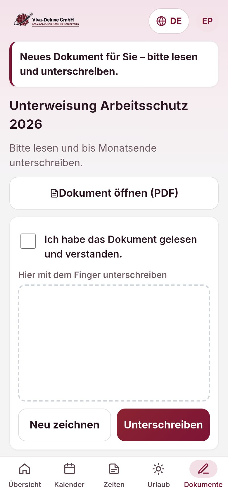
Dokument: „Dokument öffnen“ zum Lesen, Häkchen „gelesen und verstanden“, mit dem Finger unterschreiben → Unterschreiben.
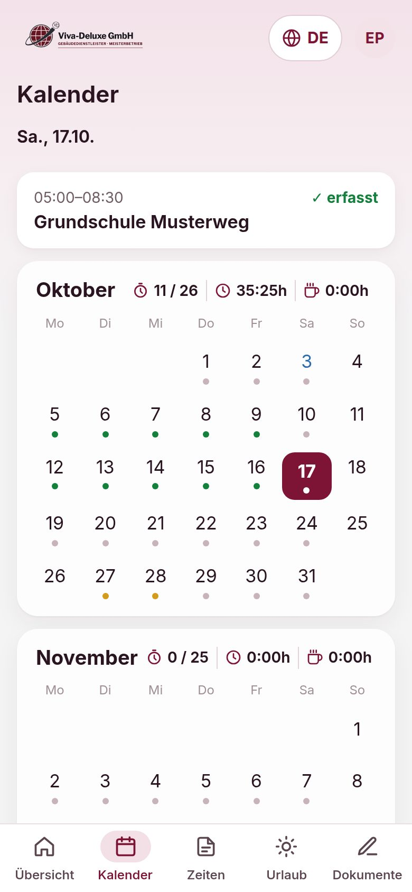
Kalender: Punkte zeigen die Einsatztage. Tag antippen → die Einsätze des Tages, dort auch bestätigen.
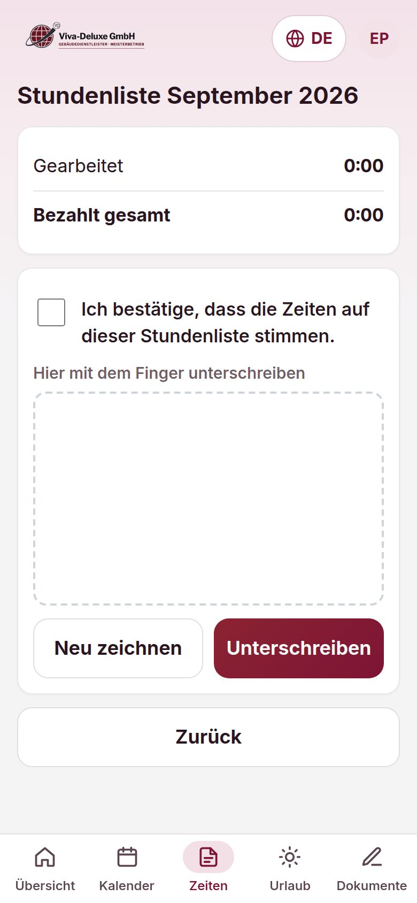
Zeiten: die eigene Stundenliste. Am Monatsende (bis zum 7. des Folgemonats) bittet die App, sie zu unterschreiben.

Unten „Urlaub“. Oben steht der Resturlaub. Art wählen (Urlaub, Krank …), von – bis, ggf. „Nur halber Tag“ → Absenden. Urlaub ist ein Antrag; unter „Meine Anträge“ steht, ob er genehmigt ist. Krank: zusätzlich sofort die Objektleitung anrufen.

Unten „Dokumente“: offene und unterschriebene Dokumente und die Lohnabrechnungen. PDF antippen → oben „Teilen / Drucken“ zum Speichern oder Drucken, „‹ Zurück“ zur App.
Eine Qualitätskontrolle (Audit) geht nur am Handy oder Tablet, weil die Fotos mit der Kamera vor Ort gemacht werden. Am PC lassen sich die Ergebnisse ansehen und die Berichte drucken.
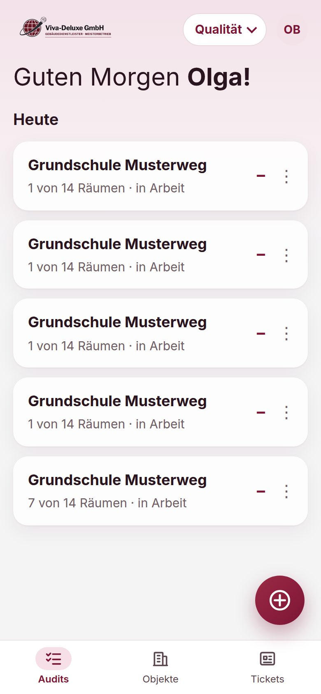
1Bereich Qualität: oben die Audits von heute mit Fortschritt („7 von 14 Räumen“). Antippen = weitermachen.
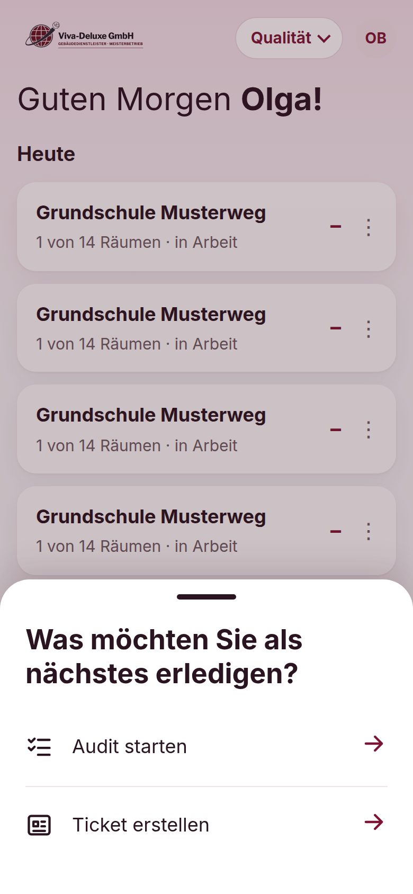
2Der runde +-Knopf: Audit starten oder Ticket erstellen.
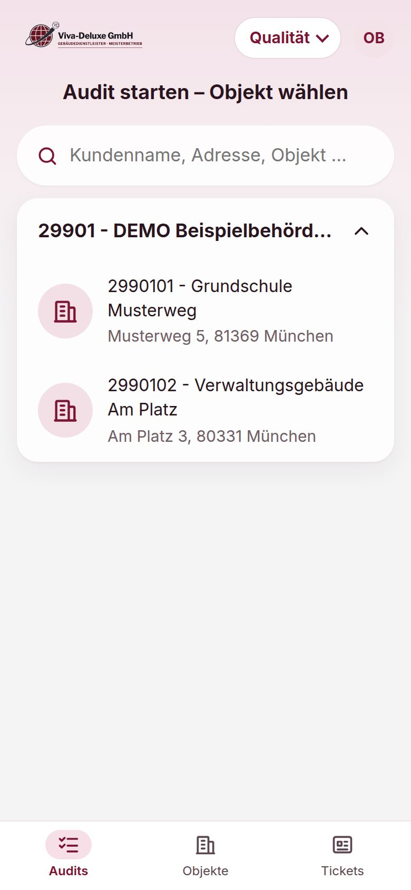
3Objekt wählen (nach Kunde sortiert, mit Suche). Die eigene Objektleitung sieht nur ihre Objekte.
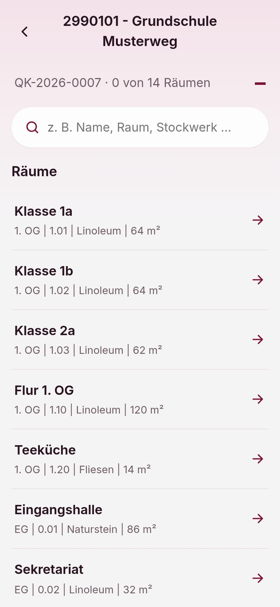
4Die Räume aus dem Raumbuch des Objekts, mit Suche (Name, Raumnummer, Stockwerk). Raum antippen.
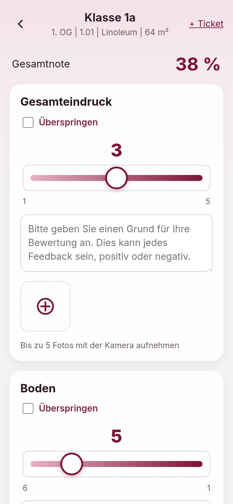
5Je Prüfpunkt den Schieberegler ziehen (bzw. Ja/Nein). Oben rechnet die Gesamtnote mit. Nicht prüfbar → „Überspringen“. Begründung eintippen, mit + bis zu 5 Fotos.
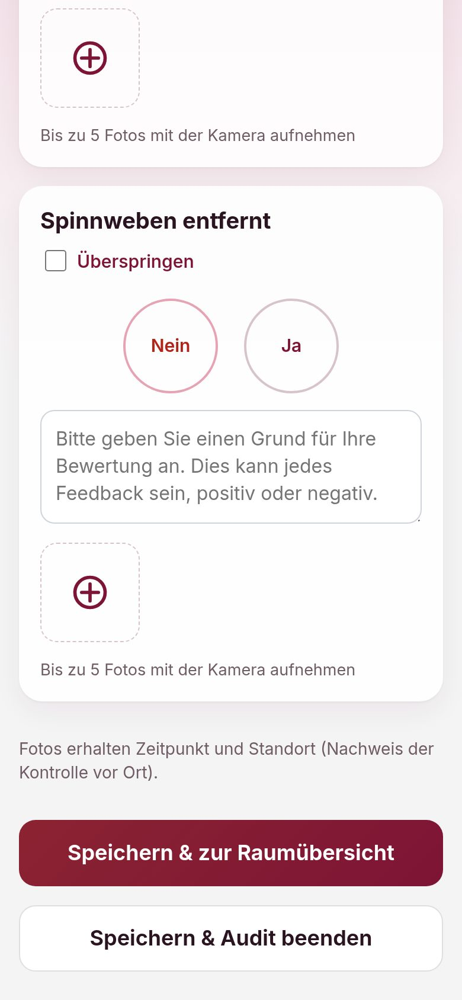
6Unten „Speichern & zur Raumübersicht“ (nächster Raum) oder „Speichern & Audit beenden“.
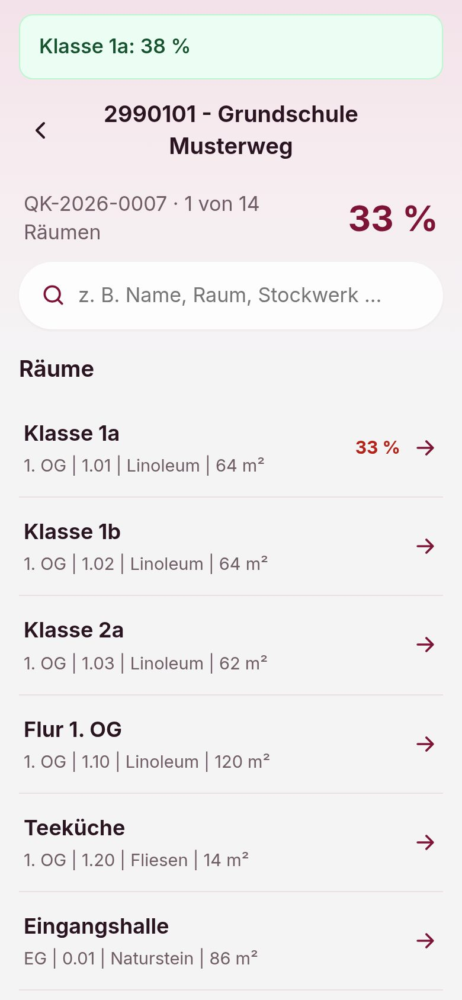
Bewertete Räume zeigen ihr Ergebnis in %, oben das Gesamtergebnis. Ein Audit muss nicht in einem Durchgang fertig werden.
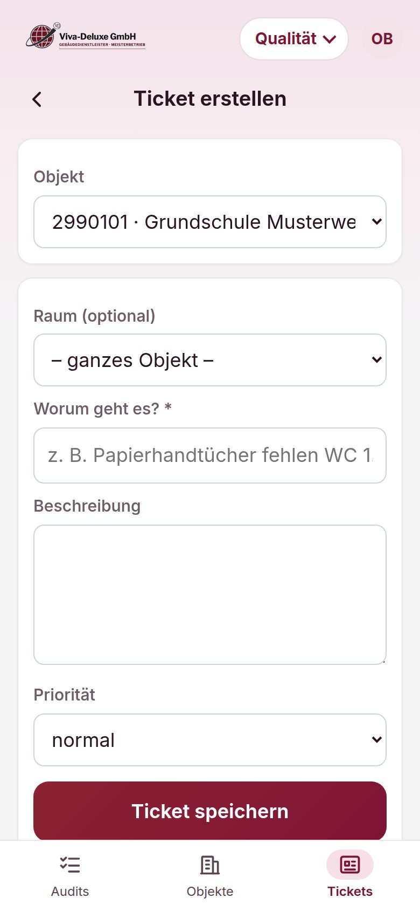
Ticket für einen Mangel oder eine Bitte des Kunden (z. B. „Papierhandtücher fehlen WC 1“): Objekt, Raum, Text, Priorität → Ticket speichern. Im Raum geht es direkt über „+ Ticket“ oben rechts.
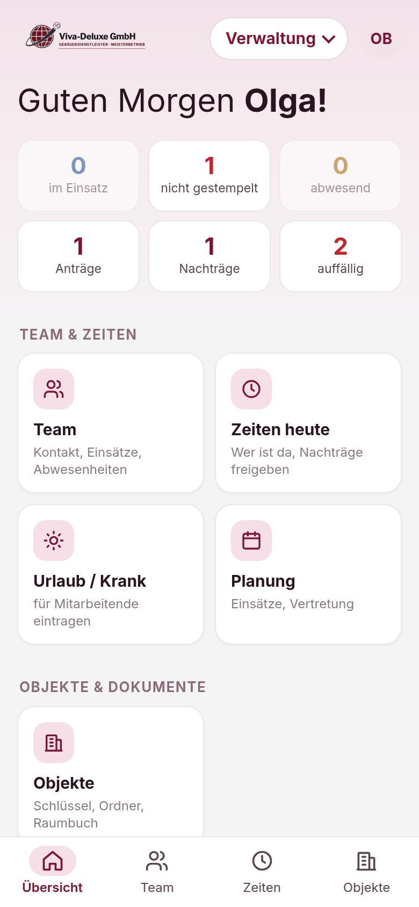
Oben die Lage von heute: im Einsatz, nicht gestempelt, abwesend, offene Urlaubsanträge, Nachträge zur Freigabe und auffällige Zeiten. Jede Kachel ist antippbar.
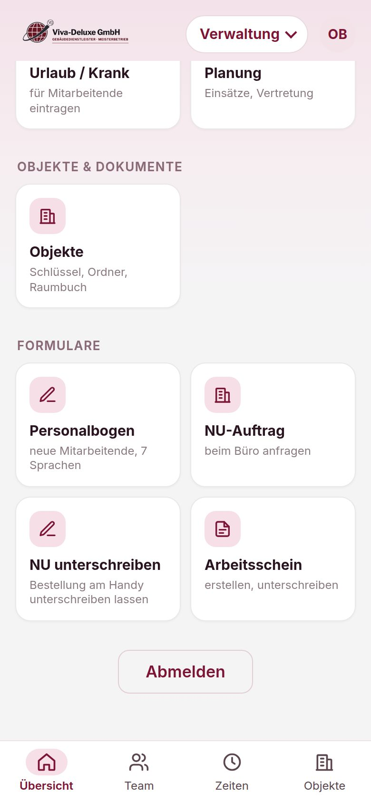
Darunter alle Bereiche: Team & Zeiten (Team, Zeiten heute, Urlaub/Krank, Planung), Objekte & Dokumente, Formulare (Personalbogen, NU-Auftrag, NU unterschreiben, Arbeitsschein).
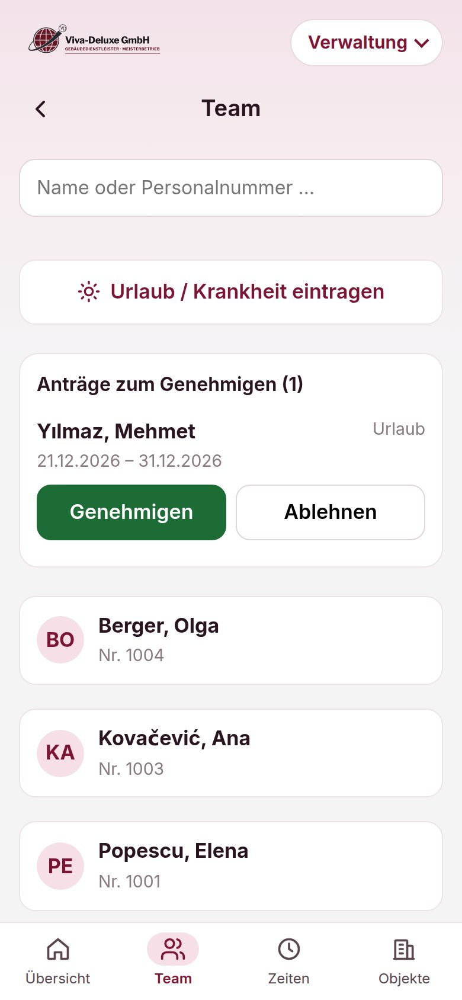
Team: Suche nach Name oder Personalnummer. Oben Anträge zum Genehmigen → Genehmigen oder Ablehnen.
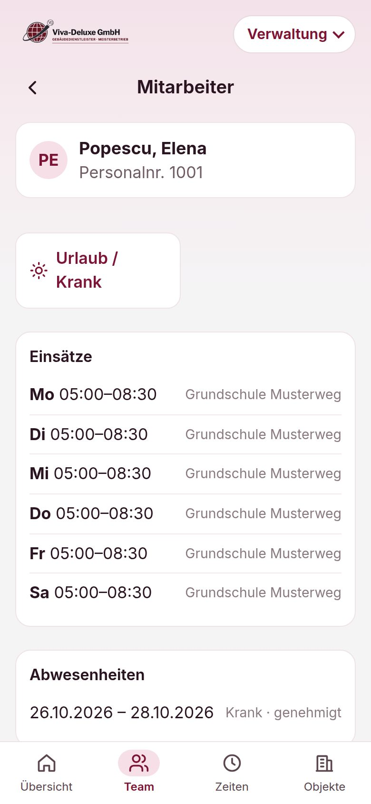
Person antippen: Anrufen, WhatsApp, Einsätze der Woche, Abwesenheiten, Urlaub/Krank eintragen.
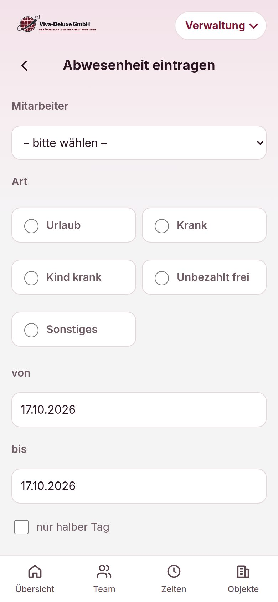
Urlaub / Krankheit eintragen für eine Person: Art, von – bis, ggf. halber Tag → speichern. Gilt sofort als genehmigt.
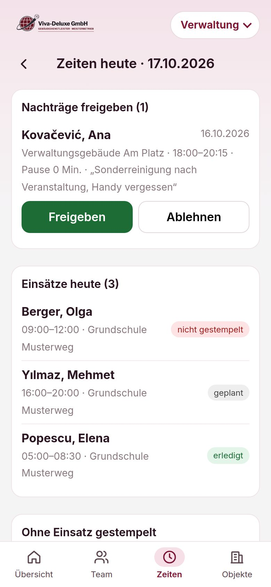
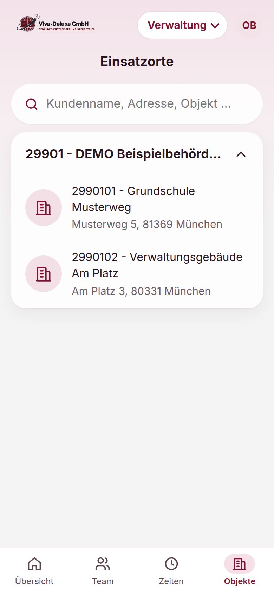
Einsatzorte nach Kunde, mit Suche nach Kunde, Adresse oder Objekt.
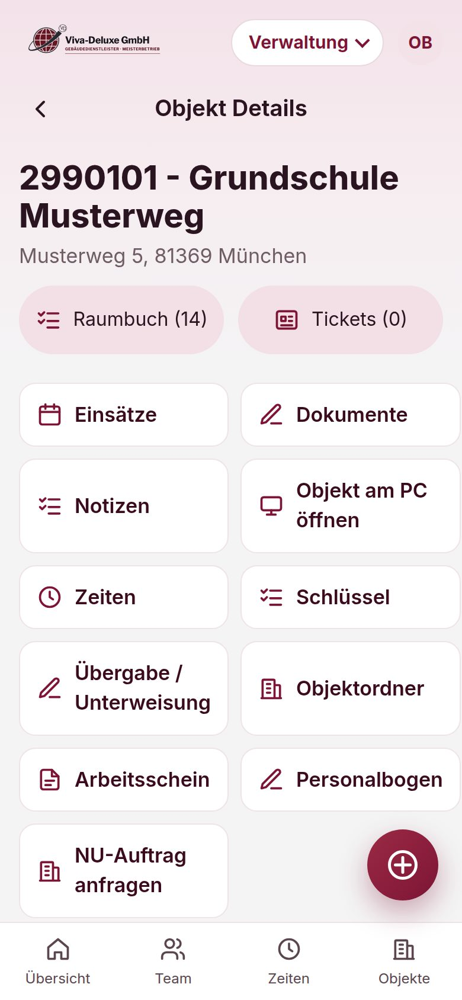
Objekt antippen: Raumbuch, Tickets, Einsätze, Dokumente, Notizen, Zeiten, Schlüssel, Übergabe / Unterweisung mit Unterschrift, Objektordner, Arbeitsschein, Personalbogen, NU-Auftrag anfragen. „Objekt am PC öffnen“ zeigt die volle Ansicht.
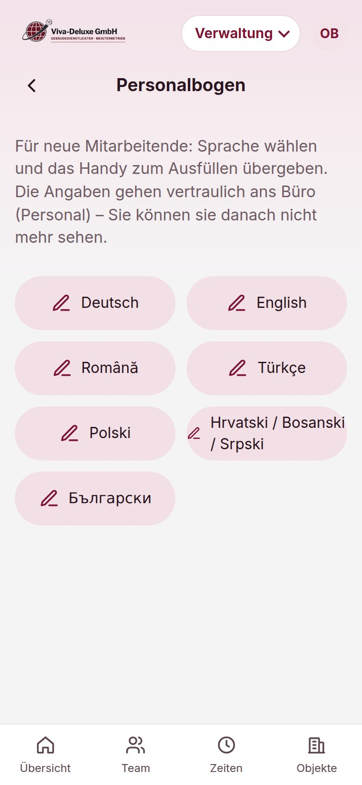
Personalbogen für neue Mitarbeitende: Sprache wählen und das Handy übergeben. Die Person füllt Schritt für Schritt aus und fotografiert Ausweis, Krankenkassenkarte, Bankkarte usw. Die Angaben gehen vertraulich ans Büro; die Objektleitung sieht sie danach nicht mehr.
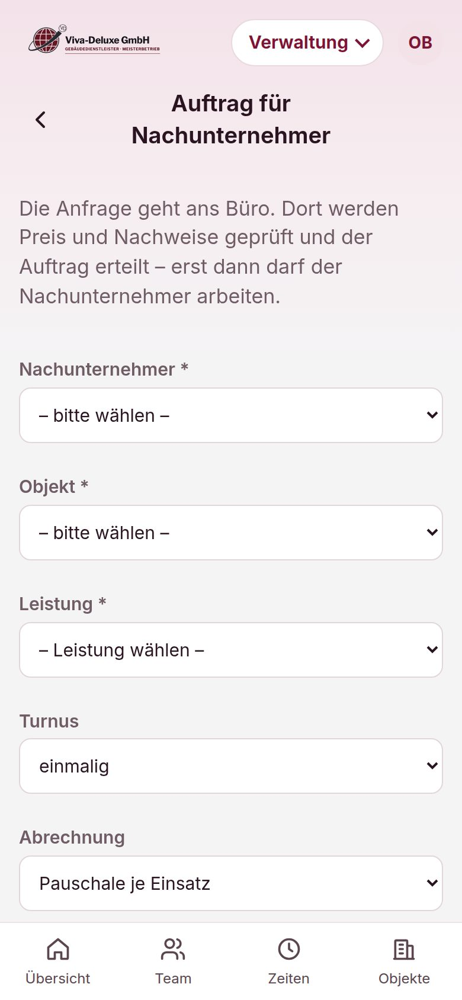
NU-Auftrag anfragen: Nachunternehmer, Objekt, Leistung, Turnus → senden. Das Büro prüft Preis und Nachweise und erteilt den Auftrag. Erst dann darf der Nachunternehmer arbeiten.
NU unterschreiben: eine erteilte Bestellung lässt sich vor Ort auf dem Handy vom Nachunternehmer unterschreiben. Arbeitsschein: anlegen und vom Kunden mit dem Finger unterschreiben lassen.
Unterweisungen an viele Mitarbeitende freigeben geht für das Büro (Admin/Personal) unter Verwaltung → Unterweisungen.
Viva-Deluxe Gebäudereinigung GmbH · Fragen: Objektleitung oder Büro · Stand 17.10.2026 · Bilder mit Beispieldaten